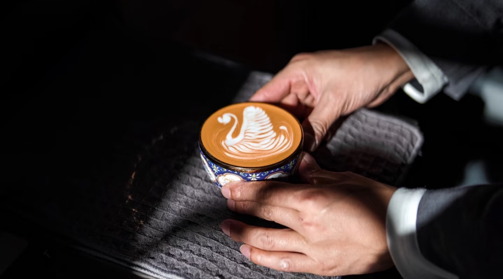
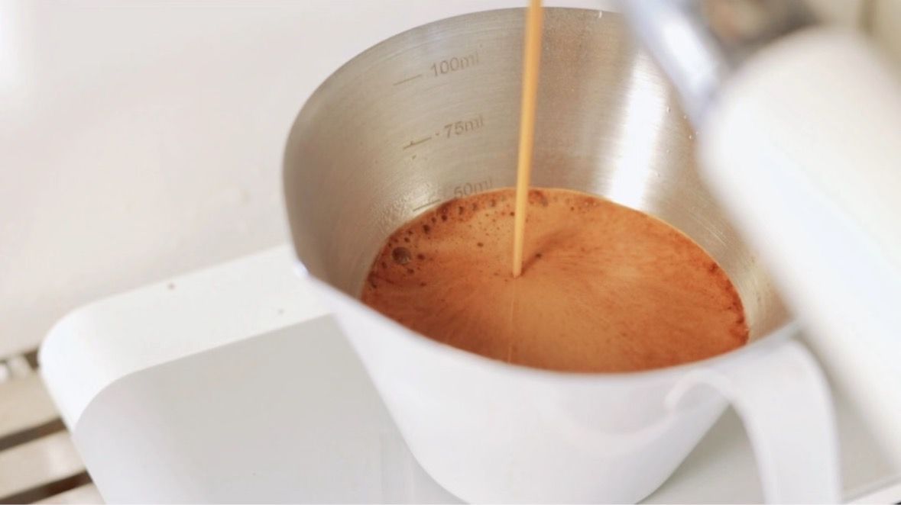

意式浓缩咖啡：咖啡灵魂的定义与品鉴之道
意式浓缩咖啡（Espresso）被誉为“意式咖啡的灵魂”，是所有意式咖啡饮品的基石。它不仅仅是一种咖啡，更是一种独特的冲煮艺术和文化符号。本篇将带你深入了解意式浓缩咖啡的定义、历史，以及如何品鉴一杯完美的浓缩。
意式咖啡简介
意式咖啡是指通过意式咖啡机萃取的浓缩咖啡作为基底，进行调配的咖啡饮品。
意式咖啡机（蒸汽压力萃取机器）是意大利人发明的，工作原理是通过咖啡机，采用高温、高压的萃取方法，在短时间内萃取出少量的高浓度咖啡，就是意式浓缩咖啡（Espresso）。以意式浓缩咖啡为基底，配合水、牛奶、奶沫等等，各种演变组合出来的咖啡饮品，都统称为意式咖啡。
Espresso在意大利语是‘快速’的意思，用在咖啡上意指‘快速制作出的咖啡’。在意式咖啡发明之前，当时较流行的是是土耳其咖啡，咖啡磨成粉放在壶内冲煮，暂不论味道好坏，但无疑是非常耗时的。随着第一次工业革命浪潮席卷意大利，人民的生活节奏被迅速加快，于是更加高效的意式咖啡应运而生。
意式咖啡的历史与发展
意式咖啡的发展是一部技术革新与文化融合的精彩篇章：
- 17世纪初期：咖啡文化扎根意大利 - 1645年威尼斯诞生意大利首家咖啡馆，咖啡逐渐融入意大利市民生活。
- 19世纪末至20世纪初：浓缩咖啡技术革命 - Angelo Moriondo（1884年）和Luigi Bezzera（1901年）发明了早期蒸汽驱动咖啡机。1948年Gaggia优化活塞压力系统，使标志性“Crema”成型。
- 二战后全球化传播 - 1950年代后，Faema等制造商推动意式浓缩标准化，卡布奇诺、拿铁等成为国际主流。
- 21世纪精品化与技术创新 - 第三波咖啡浪潮强调产地溯源与工艺精度，家用设备普及，专业级浓缩进入家庭。
- 现代产业影响 - 意式咖啡体系主导全球咖啡馆商业模式，衍生出完整产业链，贡献全球咖啡市场核心增量。
意式浓缩咖啡（Espresso）深度解析
意式浓缩Espresso定义
意式浓缩Espresso是一种使用咖啡机高温高压萃取的咖啡，它的制作过程非常讲究。把研磨得很细的咖啡粉，放在意式咖啡机的萃取手柄内，然后用9个大气压的高压下，快速萃取出的一小杯咖啡。它的量很少，一般在25-30毫升，但味道浓郁，香气扑鼻，苦味和甜味平衡得很好。
一杯完美的意式浓缩，上面会覆盖着一层厚厚的、呈棕红色的crema（咖啡油脂）。这层油脂象征着这杯浓缩的新鲜度和高品质，是在咖啡粉经过高压萃取过程中，油脂、糖分等物质乳化后形成的泡沫层，口感绵密，能有效的锁住咖啡的香气。
WBC（世界咖啡师大赛）对于Espresso的定义：在20s-30s内，经由8.5-9.5个大气压，由90.5-96℃的水萃取出的25-35ml带有crema的咖啡。
意式浓缩的品鉴
判断一杯浓缩是否好，需要从外观、香气、口感到余味这四个方面来评判：
- 外观：观察咖啡的外观，特别是crema的质地和颜色。均匀而丰富的crema通常是品质好的浓缩的标志。
- 香气：嗅一嗅咖啡的香气，好的浓缩应该有浓郁而愉悦的咖啡香，也可能包含一些独特的甜味或果香。
- 口感：尝一口，品质好的浓缩应该有醇厚而丰富的口感，不应过于苦涩或平淡。口感的层次感能够反映咖啡豆的质地和烘焙水平。
- 余味：关注咖啡的余味，好的浓缩应该留有持久的余味，而不是一闪而过。余味的品质可以反映出咖啡的复杂性和深度。
三种不同的意式浓缩
意式特浓咖啡 Ristretto
- 浓度最高，通常只萃取意式咖啡的前段，出液量约为Espresso的一半。口感突出，风味更趋向单一，酸味浓烈且质感粘稠，属于低萃高浓度。
- 粉液比：1:1至1:1.5
- 萃取时间：15-18秒
- 特点：咖啡因含量低，口感浓郁，浓度高，余韵强烈。
- 适用于：制作Dirty、澳白、短笛等咖啡。
意式浓缩咖啡 Espresso (标准)
- 最常见的意式浓缩，在意大利语中有‘快速为您现煮’之意。油脂丰富，最大的特色是浓郁香气与均衡口感的凝聚。
- 粉液比：1:1.5至1:2
- 萃取时间：20-30秒
- 特点：咖啡因含量适中，浓度适中，香气浓郁，口感均衡。
- 适用于：制作拿铁、卡布奇诺等传统奶咖，以及美式咖啡。
意式长萃咖啡 Lungo
- Lungo意为“Long”，通过增加萃取时间和水量，苦味较重且稀薄，属于高萃低浓度。
- 粉液比：1:2.5至1:5
- 萃取时间：45-60秒
- 特点：咖啡因含量高，苦味突出，风味淡。
- 适用于：喜欢苦味重的人群。